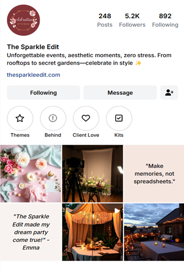
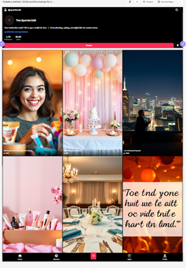
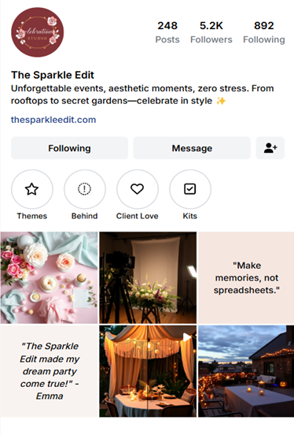
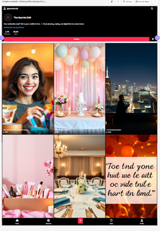
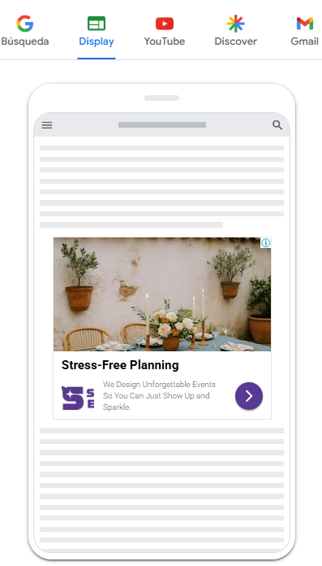
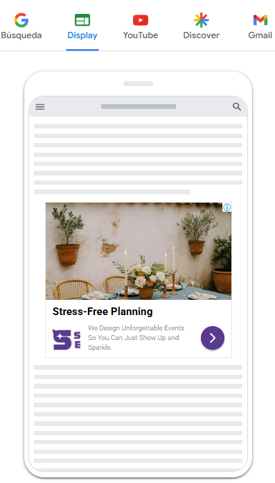
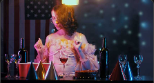
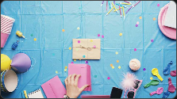
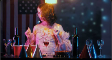
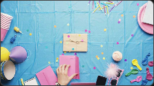

The Sparkle Edit
Caso de Estudio
¿Y si planear una celebración pudiera sentirse tan hermoso como vivirla?

¿Y si planear una celebración pudiera sentirse tan hermoso como vivirla?
The Sparkle Edit nació de una idea simple: ¿por qué las únicas opciones elegantes para celebrar están limitadas a bodas o eventos corporativos? Queríamos algo diferente. Un espacio para quienes desean celebrar la vida—cumpleaños, propuestas, cenas especiales o “simplemente porque sí”—con belleza, intención y sin estrés.
Este fue el tercer y último proyecto del bootcamp. Propuse la idea original, el nombre y el enfoque de negocio al equipo, y lideré su desarrollo de principio a fin: investigación, segmentación, diseño de estrategia, contenido visual, storytelling, automatización y seguimiento de rendimiento. No fue solo un caso de estudio—fue una forma de aplicar todo lo que habíamos aprendido, integrando creatividad, tecnología y conversión en un único ecosistema.
Comenzamos con una investigación profunda sobre el mercado, competidores, mensajería y SEO utilizando herramientas como Semrush, SimilarWeb y Ubersuggest.
A partir de ahí, construimos una estrategia basada en tres pilares clave:
Mi rol fue liderar y ejecutar toda esta estructura — fusionando emoción y tecnología para crear una experiencia personalizada y medible.
Construimos nuestro sitio web en HubSpot, con enfoque en confianza, inspiración y conversión. La estructura combina una página de inicio estilo editorial con testimonios, contenido educativo y CTAs bien ubicados — y una página de aterrizaje principal completamente optimizada para capturar leads calificados.
Esta página de aterrizaje presenta un formulario emocionalmente alineado con la voz de la marca. Una vez enviado, activa automáticamente:
Conectamos manualmente la página de aterrizaje a GTM, configurando etiquetas personalizadas, disparadores y variables para medir desplazamientos, clics en CTA, envíos de formularios y eventos clave del embudo. Todo esto se visualiza en dashboards de Looker Studio para seguimiento de rendimiento por canal y perfil de cliente.

Una página de aterrizaje genérica no habría funcionado. Cada una de nuestras personas tenía motivaciones, expectativas y etapas del embudo distintas. Crear una página personalizada para Clara, Emma y Leo nos permitió:
Esto fue clave para impulsar la relevancia, conversiones y segmentación — desde el primer clic.

Instagram, Pinterest y TikTok fueron esenciales para encontrar a cada persona donde estaban — emocional y digitalmente.
 



Basándome en los hallazgos de nuestra investigación, escribí todos los artículos del blog, diseñados tanto para posicionar orgánicamente como para construir conexión emocional. Cada artículo se integró en el embudo, presentó recursos gratuitos y se vinculó a los premium. Todo el contenido fue visualmente adaptado a redes sociales y jugó un papel clave en la atracción y conversión. Los artículos principales incluyen:
Este artículo rompió el mito de que una fiesta memorable tiene que ser costosa. Proporcionó rangos de precios realistas y consejos para optimizar cada partida del presupuesto. Presentó el Sparkulator, que ayudó a los usuarios a priorizar según su estilo y presupuesto.
Un recorrido por cinco temas populares con inspiración visual y ejemplos. Este blog se conectó con el Mini Lookbook, fomentando una exploración más profunda.
Dirigido a quienes buscan planear eventos más estructurados. Explicó qué debe incluir un buen kit y terminó con una doble invitación: descargar la Lista de Verificación definitiva de planificación de fiestas gratuita o adquirir el Kit Premium de Planificador de Fiestas, una versión de pago con herramientas editables, plantillas de Canva y hojas de cálculo para guiar el proceso. Esta publicación tenía un objetivo de conversión claro.
Este artículo reunió lugares únicos y poco conocidos, organizados por tipo de evento y estilo. Reforzó el posicionamiento de Sparkle como una marca cercana, auténtica y conocedora. Presentó el recurso descargable Joyas Ocultas: Mapa de Lugares.
Configuré campañas para cada persona con copy emocional, extensiones personalizadas y seguimiento de rendimiento a través de GA4, GTM y UTMs.
 

Los creativos fueron adaptados para cada buyer persona, con visuales cálidos y copy directo, enlazando a páginas de aterrizaje emocionales con recursos específicos por persona.


Anuncios de estilo nativo con tonos aspiracionales (Leo) o enfoque divertido/DIY (Clara). Alto atractivo visual + formulario simplificado para captura rápida de leads.

Personalmente creé todos los videos promocionales generados con IA para cada persona (guion, voz, tono y estética) usando InvideoAI:
 



Diseñé una colección de recursos descargables, cada uno con una función específica en el embudo:


Construimos un sistema automatizado usando Make y HubSpot para nutrir leads desde el primer clic.
Cada vez que un usuario enviaba un formulario, el sistema automáticamente lo segmentaba por persona y lanzaba una secuencia de emails estilo Soap Opera, escrita con prompts de Gemini AI adaptados a cada perfil y recurso descargado.
Los emails se enviaban vía Outlook y seguían una narrativa progresiva:
El sistema se ajustaba dinámicamente basándose en el comportamiento del usuario, creando una experiencia fluida y cálida.
Desarrollamos una estrategia de colaboración doble: influencers para alcance y prueba social, y proveedores para credibilidad profesional y sinergia local. Manejé el flujo completo de colaboración: segmentación inicial (formulario), acuerdos de uso, kits de bienvenida, mensajes de contacto y materiales explicativos.
Diseñamos un plan de medios con un presupuesto mensual de €3,000:
Todas las acciones fueron rastreadas con GA4, GTM, Meta Pixel y dashboards de Looker Studio. Monitoreamos envíos de formularios, desplazamientos, clics, descargas y flujos automatizados, todo conectado por UTMs.
Aunque este fue un proyecto ficticio, lo tratamos como si fuera real. Usamos IA y benchmarks de la industria para estimar los resultados que esta campaña podría lograr en condiciones reales:
Estas proyecciones fueron modeladas usando IA basándose en la estructura, presupuesto y estrategia definidos. Los resultados fueron integrados en dashboards interactivos usando GA4, GTM, HubSpot y Looker Studio, permitiendo optimización en tiempo real.
Este proyecto me permitió unir todas mis habilidades en una estrategia realista y conectada. Aprendí a:
Por encima de todo, confirmé que la personalización a escala es posible cuando la estrategia, las herramientas y el storytelling trabajan en sincronía.